La Fête de la Francophonie au Département français des sciences et techniques de l’Université nationale technique de Donetsk
par Galina KAPANADZÉ
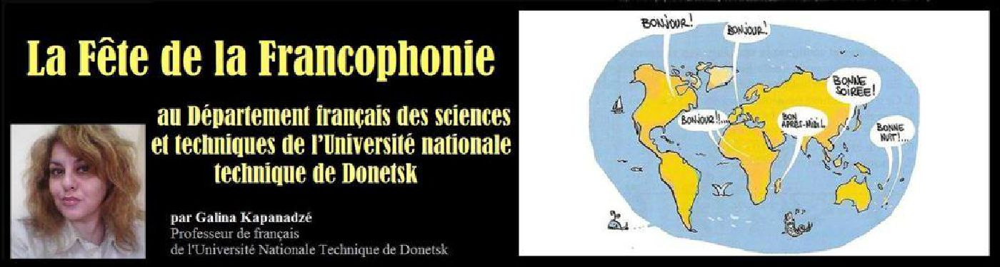
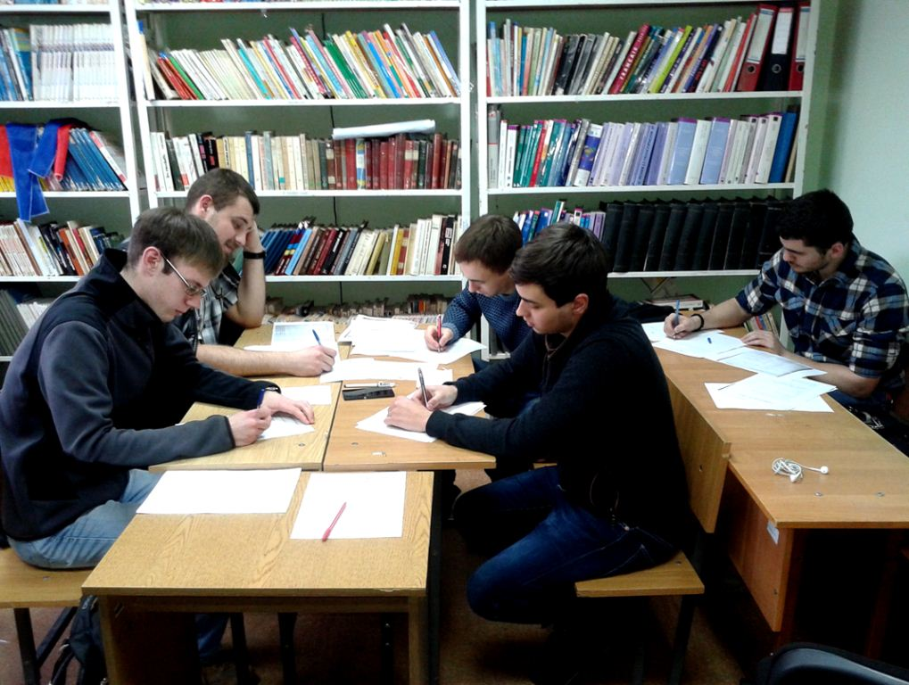Ici, à Donetsk, très loin de la France, nous sommes toujours à la défense de la langue française !
Chaque année au mois de mars depuis ces vingt dernières années l’équipe du Département organise les événements consacrés à la Francophonie.
Cette année, les activités suivantes sont organisées :
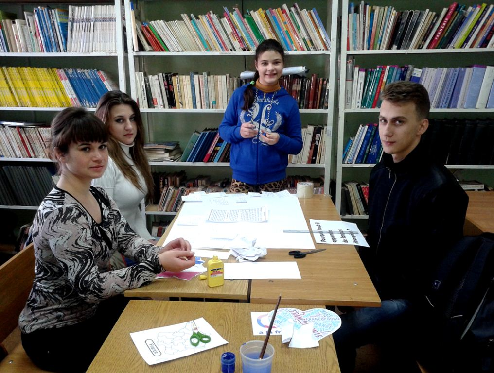Le Grand Concours de la langue française
Chaque année, depuis 20 ans, la chaire de la langue française du Département français des sciences et techniques organise un Grand Concours de la langue française auquel prennent part les étudiants francophones des 1 - 4 années d’études. Durant ce Grand Concours de la connaissance de la langue française, les étudiants de l’Université nationale techniques de Donetsk rivalisent dans les connaissances du français du niveau A1 au niveau B1. Quatre compétences de la langue y sont mesurées : compréhension orale/écrite, production orale/écrite. Les gagnants du Concours se voient attribuer des Diplômes d’Honneur tandis que tous les autres participants bénéficient d’un Certificat.
Le café-débat et le big-board porte sur le sujet « Pourquoi apprendre des langues étrangères et surtout le français ? »
Actuellement l’apprentissage des langues étrangères connaît un grand essor. Nous avons recueilli les avis des étudiants du Département et voici leurs réflexions :
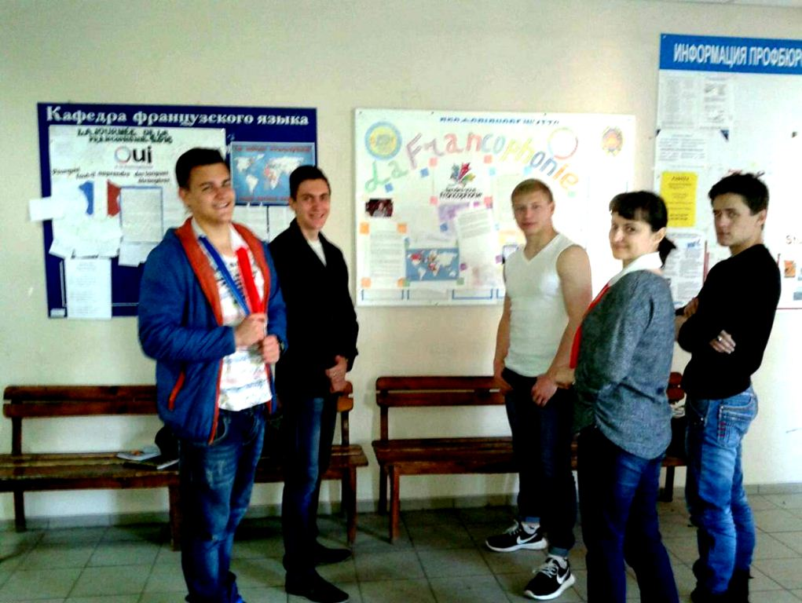Une ouverture intellectuelle et humaine
Apprendre une autre langue sera un plus pour le voyageur, qui aura moins de difficultés à communiquer avec ses semblables en arrivant dans un nouveau pays. C’est également le moyen de mieux comprendre une culture et donc de tirer un plus grand profit de son voyage !
Des opportunités professionnelles plus larges
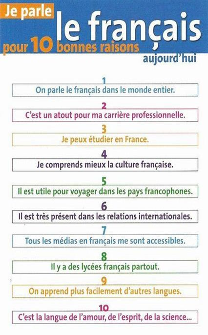Les compétences linguistiques, outre de brillants diplômes, sont des éléments qui peuvent être déterminants dans la recherche d’un emploi satisfaisant.
Pour trouver un travail, parler des langues étrangères est un atout important sur le CV du postulant. En effet, si vous arrivez à prouver à votre employeur que vous pouvez parler et écrire, par exemple l’anglais ou le français, assez correctement, il y a de fortes chances que vous puissiez obtenir le poste contrairement à d’autres postulants qui n’ont pas eu le souci d’apprendre de langues étrangères.
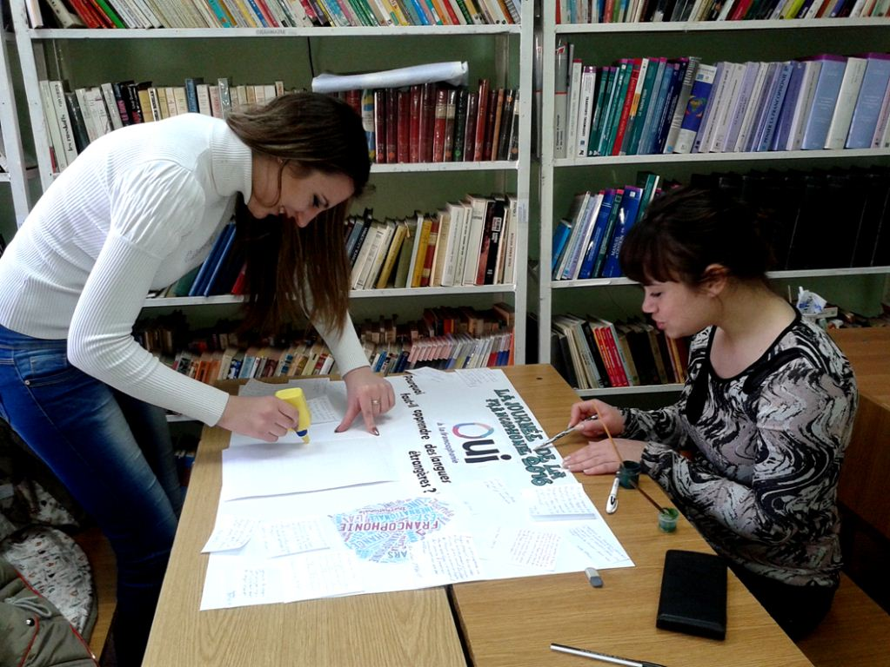Les études et les recherches
Dans le domaine scientifique, de nombreuses recherches sont publiées en langue étrangère. Apprendre des langues étrangères vous permettra donc d’avoir accès à des publications plus riches et diversifiées, capables de vous aider dans vos études. Vous pourrez aisément converser avec les chercheurs de votre domaine d’étude.
Apprendre les langues étrangères pour la santé
Apprendre à parler les langues est bon pour la santé. En fait, apprendre les langues a un impact positif sur le cerveau car cela fait travailler les neurones. Moins de chance de souffrir de la maladie d’Alzheimer !
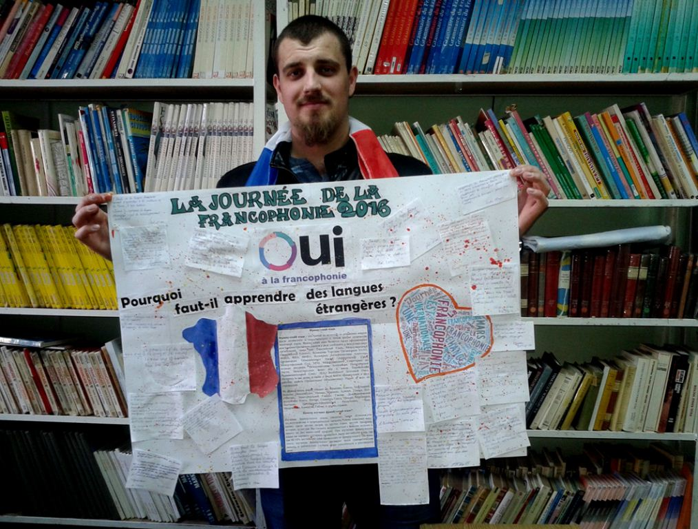Le Concours littéraire « Interprétation d'une poésie française »
Ce Concours est adressé aux amateurs de la poésie française. Nous avons proposé trois poésies d’auteurs français au choix des compétiteurs.
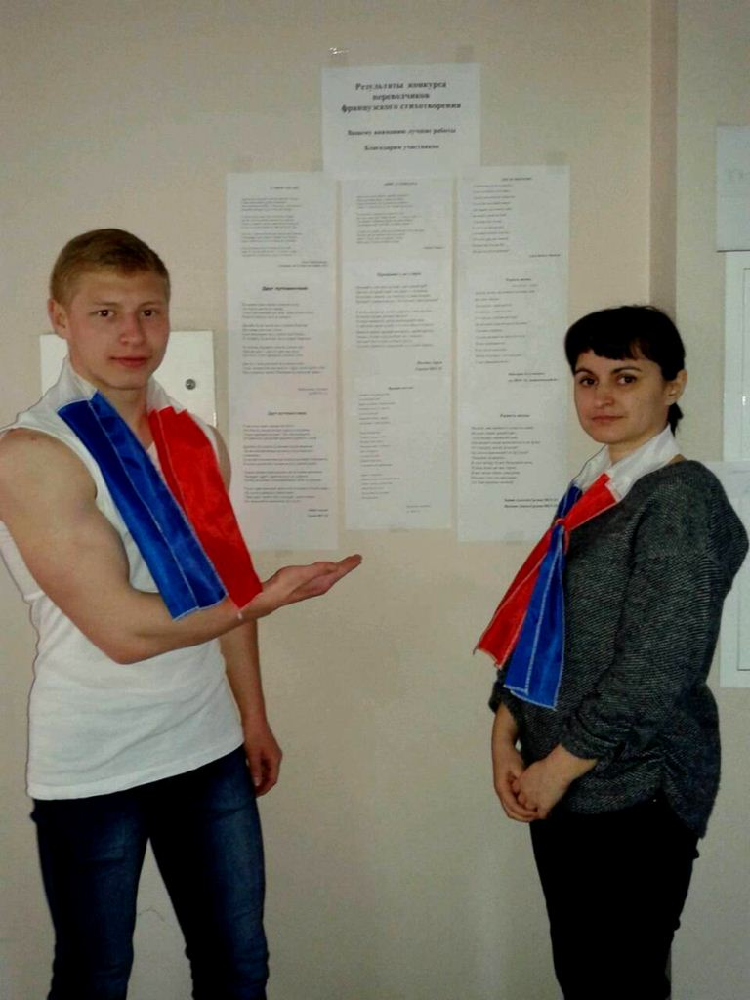JOIE DU PRINTEMPS
Au printemps, on est un peu fou,
Toutes les fenêtres sont claires,
Les prés sont pleins de primevères,
On voit des nouveautés partout.
Oh ! regarde, une branche verte !
Ses feuilles sortent de l'étui !
Une tulipe s'est ouverte...
Ce soir, il ne fera pas nuit,
Les oiseaux chantent à tue-tête,
Et tous les gens sont contents
On dirait que c'est une fête...
Ah ! que c'est joli le printemps !
Lucie Delarue-Mardrus
ADIEU À L’ENFANCE
Adieu mes jours enfants, paradis éphémère !
Fleur que brûle déjà le regard du soleil,
Source dormeuse où rit une douce chimère,
Adieu ! L’aurore fuit. C’est l’instant du réveil !
J’ai cherché vainement à retenir tes ailes
Sur mon cœur qui battait, disant : « Voici le jour ! »
J’ai cherché vainement parmi mes jeux fidèles
A prolonger mon sort dans ton calme séjour ;
L’heure est sonnée, adieu mon printemps, fleur sauvage ;
Demain tant de bonheur sera le souvenir.
Adieu ! Voici l’été ; je redoute l’orage ;
Midi porte l’éclair, et midi va venir.
Ondine Valmore
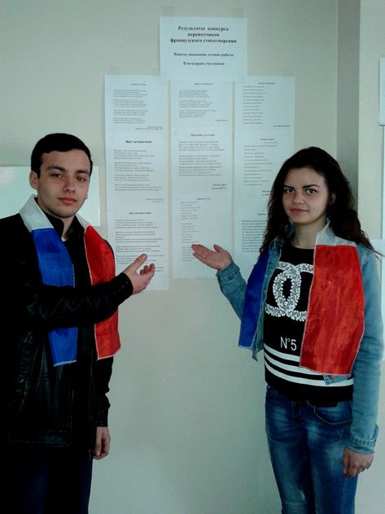L’AMI DU VOYAGE
Nous avons d’un seul cœur entrepris un voyage ;
C’était encore hier, à peine rencontrés.
Une voix nous souffla : « Tous deux, vous partirez
Ensemble partager la joie d’un seul sillage… ».
L’amitié nous porta vers d’inconnus rivages
Sur des flots incertains maintes fois chavirés.
Si nous voguions parfois, opposant nos beauprés,
Au port se retrouvaient nos mats au fil de l’âge.
Nos vies s’entrecroisaient aux sources de l’humain
S’attendant l’une l’autre à l’angle d’un chemin
Pour s’offrir tour à tour le miroir de soi-même.
Puis un funeste jour il ne resta qu’un seul…
Mais la voix de jadis lui dit : « Ton ami t’aime
Aujourd’hui comme hier. Ignore le linceul ! »
Jean-Charles Dorge,
Variations sur le thème de l’amitié, 2013
ПОПУТЧИК (traduction de « L’ami du voyage »)
На двоих одно сердце в начале пути.
Это было как будто вчера.
Голос внутренний пел нам: «Вам нужно уйти,
Радость вместе деля до конца».
Дружба будет вести нас к чужим берегам,
Все качая в волнах утопя.
Если выплывем мы, с непогодой борясь,
То в порту будем мы все в старьё нарядясь.
От истока людского слились наши дни,
Ожидая друг друга в проулке пути,
Для того, чтоб зеркально увидеть себя.
Как-то в день роковой он остался один.
Голос вторил ему как всегда:
«Друг твой любит тебя,
Как и раньше любил,
Невзирая на мрачный саван»
Майлатова Татьяна, гр. МСТС-15
Les meilleurs interprètes ont été :
Babiy Alexey,
Jilina Daria,
Maylatova Tatiana,
Doduladenko Viktorya,
Mouraviyova Anastassia.
Merci pour votre travail et félicitations !
Concours de rédaction littéraire « La France que j’aime »
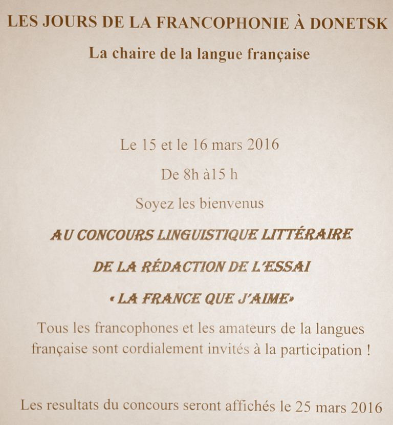La Conférence des étudiants francophones « Le Monde autour de nous »
Tous les étudiants francophones de l’Université prennent part à ce grand événement.
Les articles scientifiques et les articles concernant les différents aspects de la vie et de la civilisation seront présentés en français. Cette année le titre de la conférence est « Le Monde autour de nous. La vie au XXIème siècle ». Cette conférence se déroulera le 17 mai 2016.
Le Quiz « Connaissez-vous bien la France ?»
Ce quiz est pour les étudiants du Département et les amateurs de la langue française. Cet évènement se déroulera le 27 avril 2016.
Flash mob « Parlons de la France »
Une enquête auprès des habitants de Donetsk est programmée afin de mesurer leur connaissance de la civilisation française. Les résultats de cette enquête seront publiés à la fin du mois de mai.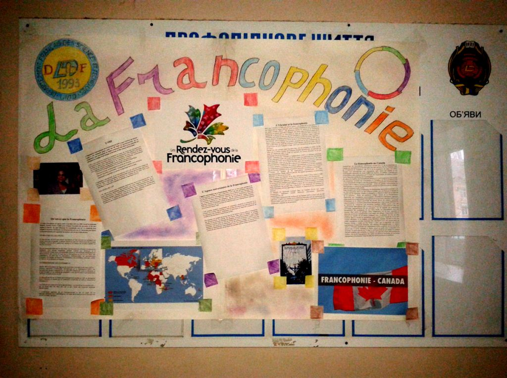
Partager cette page